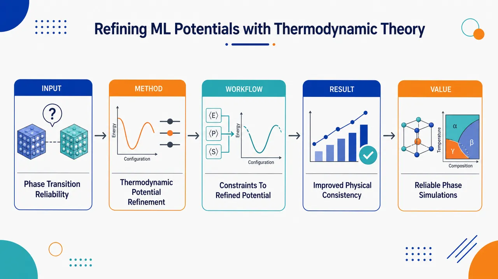

AI × Science 文献日报 2026/06/22
聚焦 AI × 物理 / 化学 / 材料交叉方向，自动过滤明显偏题的医学、教育与社会科学内容，并按主题重新排版，便于快速深读。
AI | 物理 | 化学 | 材料 | 交叉学科
原始候选 95 篇中，已剔除 0 篇明显偏离主线的内容，并从剩余 95 篇主线相关文献中精选 60 篇进入日报页，优先保留 AI × 物理 / 化学 / 材料交叉与关键计算方法工作。
核心关注（ML × ferro / 凝聚态）
8 篇今天的实质进展集中在把物理约束嵌入模型，而不是单纯筛参：相变热力学被用于精炼 MACE、NEP、equivariant GNN 类机器学习势，使 BaTiO3 等铁电相变体系的自由能与相稳定性更可控。器件与合成侧，Printable hole-conductor-free mesoscopic perovskite、铁氧化物纳米颗粒和 BaTiO3/Al2O3 介电膜把响应面法、代理模型和实验闭环优化推向可制造结构。磁性侧，MnSe 扭转反铁磁双层和铁谷二维材料依赖 DFT+U/第一性原理解析堆垛、压电与自旋-层耦合，可直接转化为 CrI3、CrSBr、NbOI2 等范德华铁性体系的 ML 哈密顿量特征。
-
01机器学习推进无空穴导体介观钙钛矿太阳能电池设计Advancing the Design of High‐Efficiency Printable Hole‐Conductor‐Free Mesoscopic Perovskite Solar Cells Through Machine Learning
📄 摘要：面向可印刷、无空穴导体介观钙钛矿太阳能电池，采用机器学习辅助高效率器件设计。题录未给出具体模型、数据规模、效率数值或最优工艺参数；可确认的重点是把数据驱动优化引入此类低成本钙钛矿光伏结构。
💡 亮点：机器学习被用于可印刷无空穴导体介观钙钛矿电池的效率优化。该方向强调以数据驱动替代纯经验工艺筛选，服务钙钛矿光伏的可制造设计。
📐 方法要点：以实验器件参数为输入的 ML 代理模型优化无空穴导体介观钙钛矿电池。
🔗 相关工作关联：呼应钙钛矿光伏贝叶斯优化、工艺窗口学习、可印刷介观器件设计。
💡 对你方向的启示：应把效率、稳定性、可印刷性设为多目标，而非只拟合单次 PCE。
-
02用相变热力学精炼机器学习势Refining machine learning potentials through thermodynamic theory of phase transitions
📄 摘要：针对机器学习原子间势在相变附近的可迁移性与热力学一致性问题，引入相变热力学理论进行势函数精炼。论文题名显示核心是把相行为、自由能或相稳定性约束纳入势能面修正，提升模型对相变过程的物理可靠性。
💡 亮点：相变热力学被直接用于修正机器学习势，而不只依赖局域结构误差最小化。该策略有望提升材料相图、成核和相变动力学模拟的可信度。
📐 方法要点：用相变热力学约束修正机器学习势的自由能面与相稳定性。
🔗 相关工作关联：对应 MACE、NEP、equivariant GNN 势在铁电、磁弹、固固相变中的迁移问题。
💡 对你方向的启示：训练势函数时应加入相边界、软模、潜热或自由能差等物理监督量。
-
03多电子薛定谔方程高斯和张量神经网络谱收敛Spectral convergence of sum-of-Gaussians tensor neural networks for many-electron Schrödinger equation
📄 摘要：提出改进的高斯和张量神经网络求解一维软库仑多电子薛定谔方程。通过模型降阶减少核函数高斯和近似下的张量分解基数量，并采用 Slater 行列式严格保持波函数反对称性；数值结果显示小基组即可达到高精度，并随基数呈稳健谱收敛。
💡 亮点：高斯和张量神经网络结合 Slater 行列式，在小基组下保持费米反对称性并实现谱收敛。该方法把神经网络压缩表示推进到多电子量子方程的高精度求解。
📐 方法要点：高斯和张量神经网络结合 Slater 行列式求多电子薛定谔方程。
🔗 相关工作关联：呼应神经量子态、FermiNet、张量网络、低秩量子化学求解方向。
💡 对你方向的启示：可为强关联凝聚态模型提供可控反对称波函数基准，校验 ML 电子结构方法。
-
04铁氧化物纳米颗粒合成优化的实验机器学习框架Integrated Experimental-Machine Learning Framework for the Synthesis Optimization and Predictive Modeling of Iron Oxide Nanoparticles in Dye Removal Applications
📄 摘要：围绕染料去除用铁氧化物纳米颗粒的共沉淀合成，比较沉淀剂并结合中心复合实验设计、响应面法和机器学习预测晶粒尺寸与比表面积。氨水沉淀得到更小晶粒 86 Å 和更高比表面积 87.23 m²/g；变量包括 30–90 °C、100–600 rpm 和 15–75 min。
💡 亮点：实验设计与机器学习联合优化铁氧化物纳米颗粒合成，氨水路线达到 86 Å 晶粒和 87.23 m²/g 比表面积。该框架展示了环境材料合成中可解释工艺窗口建模的路径。
📐 方法要点：中心复合设计、响应面法与 ML 联合预测铁氧化物晶粒和比表面积。
🔗 相关工作关联：连接纳米颗粒合成闭环、共沉淀工艺优化、吸附材料数据驱动设计。
💡 对你方向的启示：小样本实验可先用 DoE 保证可辨识性，再训练合成-结构-性能代理模型。
-
05铁电相纳米颗粒自组装增强介电薄膜储能Enhanced energy storage performance of confined co-doping dielectric films via nanoparticle self-assembly in ferroelectric phases
📄 摘要：在同轴静电纺丝聚合物纤维的铁电芯层中引入 BaTiO3 与 Al2O3 纳米颗粒，形成受限共掺杂介电薄膜。性能提升来自高极化 BaTiO3、宽带隙 Al2O3 以及 BaTiO3/Al2O3 异质界面的协同作用，从极化增强和漏电抑制两端改善储能行为。
💡 亮点：BaTiO3/Al2O3 被限制自组装在铁电芯层内，同时提高极化并抑制击穿前漏电。该结构为高能量密度聚合物介电电容器给出明确的异质界面设计原则。
📐 方法要点：同轴静电纺丝限域 BaTiO3/Al2O3 共掺杂，协同增极化并抑漏电。
🔗 相关工作关联：呼应铁电聚合物纳米复合介质、界面极化调控、高储能薄膜设计。
💡 对你方向的启示：ML 特征应显式编码填料带隙、极化率、界面面积和空间分布约束。
-
06铁谷材料中的压电操控与堆垛依赖磁性Piezoelectric manipulation and stacking-dependent magnetism in ferrovalley materials
📄 摘要：理论提出谷-压电耦合策略，把异常谷霍尔效应、层霍尔效应与压电响应统一到铁谷二维体系中讨论。通过第一性原理研究堆垛依赖磁性和电子输运特征，强调该机制可推广到一般谷电子材料，实现压电调控的谷输运功能。
💡 亮点：铁谷二维体系中，压电响应被用来耦合异常谷霍尔效应和层霍尔效应。该方案把力电调控引入谷电子输运，为多功能二维器件建立可计算设计框架。
📐 方法要点：第一性原理解析铁谷材料中压电、谷霍尔和堆垛磁性的耦合。
🔗 相关工作关联：对应 DFT+U 铁谷筛选、二维谷电子学、压电调控磁输运方向。
💡 对你方向的启示：构建 ML 筛选时需同时预测谷极化、压电张量、磁基态和堆垛能。
-
07磁结构相变降低铁磁体磁热效应和磁化率Decrease of magnetocaloric effect and magnetic susceptibility of ferromagnet due to magnetostructural phase transition
📄 摘要：建立基于自旋交换能和磁子系统熵的理论模型，描述磁结构相变体系的磁化强度温度依赖。通过拟合实验磁化曲线提取控制相变的物理参数，并计算磁场诱导温变和含顺磁过程贡献的磁化率；结论指出磁结构相变虽导致突变，却会降低磁热效应和磁化率表现。
💡 亮点：自旋交换能与磁熵模型解释了磁结构相变中磁热效应和磁化率的下降。该结果提醒低温磁制冷材料不能只追求尖锐相变。
📐 方法要点：以交换能和磁熵建立磁结构相变下磁化与磁热响应模型。
🔗 相关工作关联：呼应 Landau 磁弹耦合、磁热材料建模、相变磁化曲线反演。
💡 对你方向的启示：ML 拟合磁热数据不能只追求突变强度，还要约束熵变和磁化率贡献。
-
08自旋层耦合扭转反铁磁双层中的子层交错磁性Sublayer-resolved altermagnetism in twisted antiferromagnetic bilayers with spin-layer coupling
📄 摘要：研究由两层反铁磁 MnSe 单层组成的扭转双层，发现莫尔调控产生子层分辨的 i 波交错磁自旋劈裂。扭转磁性范德华材料中的自旋-层耦合使不同子层呈现可区分的交错磁特征，展示莫尔工程生成非常规自旋纹理的途径。
💡 亮点：扭转 MnSe 反铁磁双层出现子层分辨 i 波交错磁性自旋劈裂。该工作把莫尔工程与交错磁性连接起来，扩展二维反铁磁自旋电子学的可调维度。
📐 方法要点：DFT 研究扭转 MnSe 反铁磁双层中子层分辨 i 波交错磁劈裂。
🔗 相关工作关联：连接 altermagnetism、莫尔磁性、CrI3/CrSBr 类范德华自旋层耦合。
💡 对你方向的启示：ML 哈密顿量应保留子层、局域堆垛和扭角特征，不能只用平均磁序。
今日摘要
总览：今日条目覆盖可印刷介观钙钛矿太阳能电池、杂化碘化锗铁电体、二维手性 SnP₂Se₆、滑移铁电 SnP₂S₆、扭转反铁磁双层、CrPS₄、UTe₂、Re₂Zr、LaFeAsO 与一维范德华 InSeI，高频主题是极化、谷、自旋、声子和晶格应变的耦合调控。方法侧从机器学习势函数的相变热力学约束、张量神经网络求解多电子薛定谔方程、矩阵乘积态拟合费米－哈伯德梯子自旋模型，到广义梯度近似加库仑修正、随机相近似、张量网络环簇展开和过程张量非马尔可夫动力学，显示计算材料、量子多体和实验闭环合成正在并行收敛。
热点：热点一：铁电与极化功能器件 → 通过化学键工程、纳米颗粒自组装限域共掺、交流极化介观畴演化、外场上升时间控制翻转路径和二次谐波成像判别极化取向 → 典型工作包括杂化碘化锗铁电体的低矫顽场大极化、卤化物钙钛矿铁电体的高格拉斯系数位移电流、SnP₂S₆ 滑移铁电极化识别以及弛豫铁电交流极化。热点二：二维磁性、谷物理和拓扑自旋纹理 → 利用压电应变、层间堆垛、扭角莫尔结构和自旋－层耦合调控铁谷、交替磁性、刺猬状外尔类自旋纹理与拓扑缺陷 → 典型工作包括铁谷材料的压电操控、扭转反铁磁双层的亚层分辨交替磁性、二维手性 SnP₂Se₆ 的刺猬状自旋纹理以及二维材料拓扑自旋纹理多尺度模拟。热点三：强关联超导与磁热材料 → 围绕多带、非常规配对、声子非线性驱动、高压非晶化和稀土大自旋熵景观开展机理辨析 → 典型工作包括笼目超导体 Re₂Zr 的多带超导、UTe₂ 的多轨道磁涨落与各向异性、LaFeAsO 的非线性声子学结构控制、一维范德华 InSeI 的多非晶态超导以及 Gd₁−ₓErₓVO₄、HoB₂、Eu₂MgSi₂O₇ 的低温磁热响应。热点四：机器学习与张量网络进入材料发现闭环 → 机器学习势函数引入相变热力学约束，实验－机器学习联合优化氧化铁纳米颗粒合成，四维扫描透射电镜深度学习解析 Fe－Co 薄膜织构，矩阵乘积态和张量网络用于哈伯德梯子与量子多体展开。
今日文献
60 篇 · 11 含图深析-
01
📊 含图深析
📄 摘要：提出改进的高斯和张量神经网络求解一维软库仑多电子薛定谔方程。通过模型降阶减少核函数高斯和近似下的张量分解基数量，并采用 Slater 行列式严格保持波函数反对称性；数值结果显示小基组即可达到高精度，并随基数呈稳健谱收敛。
💡 亮点：高斯和张量神经网络结合 Slater 行列式，在小基组下保持费米反对称性并实现谱收敛。该方法把神经网络压缩表示推进到多电子量子方程的高精度求解。
📖 展开分析 + 配图
 研究问题如何用更低张量分解基数、更严格物理约束的神经网络波函数，高精度求解一维软库仑多电子薛定谔方程，并验证其随基数增加是否呈现谱收敛。创新方法将高斯和张量神经网络、核函数高斯和近似的模型降阶、Slater 行列式反对称结构结合起来：用高斯和压缩多电子相互作用与波函数表达，用降阶减少张量基数，用行列式结构从网络架构层面严格保证费米子反对称性。工作流程输入一维软库仑多电子体系与核函数高斯和近似；先对核函数近似进行模型降阶，压缩所需张量分解基数；再构造高斯和张量神经网络波函数；通过 Slater 行列式组装电子交换反对称结构；最后数值求解基态能量与波函数，并评估小基组精度和基数增加时的收敛曲线。关键结果改进模型在小基组下即可达到高精度；随着高斯和/张量基数增加，数值实验显示稳定的谱收敛趋势；模型降阶显著减少张量分解所需基数；Slater 行列式使反对称性被严格满足，而非依赖惩罚项或后验修正。应用价值为多电子薛定谔方程提供一种兼具物理结构、低秩压缩和高精度收敛的神经网络波函数方案，可用于计算量子物理中的电子结构模拟，并为更高维、更复杂多电子体系的高效求解提供方法基础。
研究问题如何用更低张量分解基数、更严格物理约束的神经网络波函数，高精度求解一维软库仑多电子薛定谔方程，并验证其随基数增加是否呈现谱收敛。创新方法将高斯和张量神经网络、核函数高斯和近似的模型降阶、Slater 行列式反对称结构结合起来：用高斯和压缩多电子相互作用与波函数表达，用降阶减少张量基数，用行列式结构从网络架构层面严格保证费米子反对称性。工作流程输入一维软库仑多电子体系与核函数高斯和近似；先对核函数近似进行模型降阶，压缩所需张量分解基数；再构造高斯和张量神经网络波函数；通过 Slater 行列式组装电子交换反对称结构；最后数值求解基态能量与波函数，并评估小基组精度和基数增加时的收敛曲线。关键结果改进模型在小基组下即可达到高精度；随着高斯和/张量基数增加，数值实验显示稳定的谱收敛趋势；模型降阶显著减少张量分解所需基数；Slater 行列式使反对称性被严格满足，而非依赖惩罚项或后验修正。应用价值为多电子薛定谔方程提供一种兼具物理结构、低秩压缩和高精度收敛的神经网络波函数方案，可用于计算量子物理中的电子结构模拟，并为更高维、更复杂多电子体系的高效求解提供方法基础。核心概览
论文提出改进的高斯和张量神经网络，用于求解一维软库仑多电子薛定谔方程，属于科学机器学习/量子多体数值计算方向。
方法要点
- 使用高斯和（sum-of-Gaussians）形式近似核函数，以便进行张量化处理。
- 通过模型降阶减少张量分解所需的基函数数量。
- 采用张量神经网络表示多电子波函数或相关解结构。
- 引入 Slater 行列式以严格保证多电子波函数的反对称性。
- 针对一维软库仑多电子薛定谔方程进行数值求解与收敛性验证。
关键结果
- 数值结果表明，该方法在小基组下即可达到高精度。
- 随着基函数数量增加，方法表现出稳健的谱收敛。
- 模型降阶能够减少高斯和近似下张量分解所需的基数量。
- Slater 行列式结构确保了波函数反对称性，这一点由方法设计直接保证。
创新性判断
- 可能的新颖点在于将高斯和张量神经网络与模型降阶结合，用于降低多电子薛定谔方程中的张量基规模；但摘要未详述与已有方法的定量对比。
- 通过 Slater 行列式在网络结构中严格保持反对称性，是面向费米子体系的重要设计；是否相较已有反对称神经网络具有结构性优势，摘要未详述。
- 摘要强调“谱收敛”，说明该方法可能不仅追求经验精度，还关注随基数增长的系统收敛行为；具体理论证明或仅为数值观察，摘要未详述。
-
02
📊 含图深析
📄 摘要：围绕染料去除用铁氧化物纳米颗粒的共沉淀合成，比较沉淀剂并结合中心复合实验设计、响应面法和机器学习预测晶粒尺寸与比表面积。氨水沉淀得到更小晶粒 86 Å 和更高比表面积 87.23 m²/g；变量包括 30–90 °C、100–600 rpm 和 15–75 min。
💡 亮点：实验设计与机器学习联合优化铁氧化物纳米颗粒合成，氨水路线达到 86 Å 晶粒和 87.23 m²/g 比表面积。该框架展示了环境材料合成中可解释工艺窗口建模的路径。
📖 展开分析 + 配图
 研究问题如何在共沉淀法制备铁氧化物纳米粒子时，通过选择沉淀剂并调控合成条件，获得更适合染料去除的晶粒尺寸和比表面积；核心矛盾是传统实验筛选耗时、参数关系复杂，难以快速预测材料结构与吸附应用性能。创新方法构建“实验合成—沉淀剂对比—机器学习预测”的一体化框架：用两种沉淀剂制备铁氧化物纳米粒子，获取结构表征数据，再训练机器学习模型预测晶粒尺寸和比表面积，把材料合成参数转化为可计算、可预判的染料去除性能优化线索。工作流程输入合成条件与沉淀剂类型，经共沉淀反应生成铁氧化物纳米粒子；随后进行材料表征，提取晶粒尺寸、比表面积等关键指标；再将实验数据输入机器学习模型进行训练与预测；最终输出面向染料去除应用的优选纳米粒子结构参数和合成方案。关键结果研究实现了对两种沉淀剂制备铁氧化物纳米粒子的对比分析，并将机器学习用于晶粒尺寸和比表面积预测；结果指向一种可由实验数据驱动的合成优化路径，为筛选更高染料去除潜力的铁氧化物纳米材料提供预测工具，但摘要未给出具体去除率、吸附容量或模型精度数值。应用价值该框架可减少反复试错式纳米材料合成实验，帮助快速锁定适合染料废水处理的铁氧化物纳米粒子制备条件；在视觉上可呈现为“实验烧杯 + 纳米颗粒 + 机器学习芯片 + 染料废水净化”的闭环优化系统。
研究问题如何在共沉淀法制备铁氧化物纳米粒子时，通过选择沉淀剂并调控合成条件，获得更适合染料去除的晶粒尺寸和比表面积；核心矛盾是传统实验筛选耗时、参数关系复杂，难以快速预测材料结构与吸附应用性能。创新方法构建“实验合成—沉淀剂对比—机器学习预测”的一体化框架：用两种沉淀剂制备铁氧化物纳米粒子，获取结构表征数据，再训练机器学习模型预测晶粒尺寸和比表面积，把材料合成参数转化为可计算、可预判的染料去除性能优化线索。工作流程输入合成条件与沉淀剂类型，经共沉淀反应生成铁氧化物纳米粒子；随后进行材料表征，提取晶粒尺寸、比表面积等关键指标；再将实验数据输入机器学习模型进行训练与预测；最终输出面向染料去除应用的优选纳米粒子结构参数和合成方案。关键结果研究实现了对两种沉淀剂制备铁氧化物纳米粒子的对比分析，并将机器学习用于晶粒尺寸和比表面积预测；结果指向一种可由实验数据驱动的合成优化路径，为筛选更高染料去除潜力的铁氧化物纳米材料提供预测工具，但摘要未给出具体去除率、吸附容量或模型精度数值。应用价值该框架可减少反复试错式纳米材料合成实验，帮助快速锁定适合染料废水处理的铁氧化物纳米粒子制备条件；在视觉上可呈现为“实验烧杯 + 纳米颗粒 + 机器学习芯片 + 染料废水净化”的闭环优化系统。核心概览
该论文面向染料去除应用，研究共沉淀法合成铁氧化物纳米颗粒，并结合实验设计、响应面法和机器学习优化/预测晶粒尺寸与比表面积，属于纳米材料制备优化与环境吸附材料方向。
方法要点
- 采用共沉淀法制备铁氧化物纳米颗粒。
- 比较不同沉淀剂效果，摘要明确提到氨水优于另一试剂，但另一试剂名称未详述。
- 考察合成温度、搅拌速率和反应时间对材料性能的影响。
- 使用实验设计与响应面法进行工艺优化。
- 引入机器学习模型预测晶粒尺寸和比表面积。
- 性能指标聚焦于晶粒尺寸和比表面积，并将材料应用背景设定为染料去除。
关键结果
- 氨水作为沉淀剂表现优于另一种沉淀剂。
- 在摘要所述条件下获得了晶粒尺寸 86 Å 的铁氧化物纳米颗粒。
- 对应比表面积达到 87.23 m²/g。
- 研究考察了温度 30–90 °C、搅拌速率 100–600 rpm、反应时间 15–75 min 对材料性能的影响。
- 摘要表明实验设计、响应面法和机器学习被用于合成优化与预测建模，但具体模型类型、精度指标和验证方式摘要未详述。
创新性判断
- 可能的新颖点在于将实验设计、响应面法与机器学习整合到铁氧化物纳米颗粒共沉淀合成优化中，用于同时预测晶粒尺寸和比表面积。
- 相比单纯实验优化，该工作可能更强调“实验—机器学习”一体化框架，提高合成条件筛选与性能预测效率。
- 面向染料去除应用，将材料制备参数、结构性质与应用目标关联起来，具有一定应用导向。
- 但摘要未详述机器学习算法、数据规模、对照方法和染料去除实测性能，因此其创新性强弱仍需全文验证。
-
03
📊 含图深析
📄 摘要：面向可印刷、无空穴导体介观钙钛矿太阳能电池，采用机器学习辅助高效率器件设计。题录未给出具体模型、数据规模、效率数值或最优工艺参数；可确认的重点是把数据驱动优化引入此类低成本钙钛矿光伏结构。
💡 亮点：机器学习被用于可印刷无空穴导体介观钙钛矿电池的效率优化。该方向强调以数据驱动替代纯经验工艺筛选，服务钙钛矿光伏的可制造设计。
📖 展开分析 + 配图
 研究问题如何摆脱传统试错实验，在可印刷、介孔、无空穴导体钙钛矿太阳能电池中快速找到高效率的材料组合、结构参数与工艺设计方案。创新方法将机器学习作为器件设计导航器，用数据模型替代盲目实验筛选，面向“可印刷介孔 + 无空穴导体”这一低成本特殊结构预测潜在高效设计；核心 Aha 点是把复杂材料和器件参数转化为可计算、可筛选的设计空间。工作流程输入已有材料、器件结构、工艺参数与性能数据；构建描述材料和器件特征的数据表；训练机器学习模型学习参数与效率之间的关系；利用模型预测和排序候选设计；筛选出更可能实现高效率的无空穴导体介孔钙钛矿太阳能电池方案。关键结果研究表明机器学习可用于支持该类可印刷介孔钙钛矿太阳能电池的设计决策，并有望加速高效率方案发现；摘要未提供具体效率提升数值、最佳器件性能、模型精度或实验验证结果。应用价值为低成本、可印刷、无空穴导体钙钛矿太阳能电池提供数据驱动设计路径，减少实验试错成本，缩短材料与器件优化周期，推动可规模化光伏器件开发。
研究问题如何摆脱传统试错实验，在可印刷、介孔、无空穴导体钙钛矿太阳能电池中快速找到高效率的材料组合、结构参数与工艺设计方案。创新方法将机器学习作为器件设计导航器，用数据模型替代盲目实验筛选，面向“可印刷介孔 + 无空穴导体”这一低成本特殊结构预测潜在高效设计；核心 Aha 点是把复杂材料和器件参数转化为可计算、可筛选的设计空间。工作流程输入已有材料、器件结构、工艺参数与性能数据；构建描述材料和器件特征的数据表；训练机器学习模型学习参数与效率之间的关系；利用模型预测和排序候选设计；筛选出更可能实现高效率的无空穴导体介孔钙钛矿太阳能电池方案。关键结果研究表明机器学习可用于支持该类可印刷介孔钙钛矿太阳能电池的设计决策，并有望加速高效率方案发现；摘要未提供具体效率提升数值、最佳器件性能、模型精度或实验验证结果。应用价值为低成本、可印刷、无空穴导体钙钛矿太阳能电池提供数据驱动设计路径，减少实验试错成本，缩短材料与器件优化周期，推动可规模化光伏器件开发。核心概览
该论文面向可印刷、无空穴导体介观钙钛矿太阳能电池，尝试用机器学习辅助器件设计与效率优化，属于数据驱动光伏材料/器件优化方向。
方法要点
- 将机器学习引入无空穴导体介观钙钛矿太阳能电池的设计优化流程。
- 研究对象聚焦于可印刷、低成本的介观钙钛矿光伏器件结构。
- 具体机器学习模型、输入特征、数据来源、数据规模与训练流程：摘要未详述。
- 具体优化变量，如材料组成、层厚、烧结/印刷工艺或界面参数：摘要未详述。
关键结果
- 摘要明确指出该工作旨在推进高效率可印刷无空穴导体介观钙钛矿太阳能电池的设计。
- 可确认的结论是：数据驱动/机器学习方法被用于辅助此类器件的效率优化。
- 具体效率提升幅度、最优器件性能、对照实验结果和统计显著性：摘要未详述。
- 是否给出实验验证、预测-实验闭环或可推广设计规则：摘要未详述。
创新性判断
- 可能的新颖点在于：将机器学习用于无空穴导体介观钙钛矿太阳能电池这一特定可印刷低成本结构的设计优化，而非仅依赖经验试错。
- 若论文实现了从数据建模到工艺/结构推荐再到器件验证的闭环优化，其创新性会更强；但摘要未详述，无法确认。
- 相对同方向传统实验优化工作，其潜在贡献可能是提高参数筛选效率、发现关键设计因子或加速高效率器件开发；具体贡献程度需全文数据支持。
-
04
📊 含图深析
📄 摘要：针对机器学习原子间势在相变附近的可迁移性与热力学一致性问题，引入相变热力学理论进行势函数精炼。论文题名显示核心是把相行为、自由能或相稳定性约束纳入势能面修正，提升模型对相变过程的物理可靠性。
💡 亮点：相变热力学被直接用于修正机器学习势，而不只依赖局域结构误差最小化。该策略有望提升材料相图、成核和相变动力学模拟的可信度。
📖 展开分析 + 配图

研究问题机器学习原子间势在相变附近容易失去可迁移性：模型虽然能拟合常规能量、力和应力数据，却可能在固-固、固-液等相变区域给出热力学不一致的自由能、相稳定性或相行为预测。创新方法将相变热力学理论作为势函数精炼的物理约束，不再只依赖局域构型的监督学习误差，而是把自由能、相稳定性、相行为等宏观热力学信息反馈到机器学习势能面中，使势函数在相变区域更符合真实物理。工作流程输入已有机器学习原子间势与相变相关原子构型；计算或评估相行为、自由能差、相稳定性等热力学量；用相变热力学约束识别势能面中不一致区域；对势函数进行修正或再优化；输出在相变附近更可靠、更可迁移的机器学习势。关键结果论文指出相变热力学理论可用于精炼机器学习原子间势，目标是提升模型在相变区域的热力学一致性与物理可靠性；但摘要未提供具体材料体系、数值误差、性能提升幅度或基线对比结果。应用价值该研究有助于构建可用于相图预测、相变模拟、材料稳定性分析和高温/高压条件原子模拟的机器学习势，减少模型在关键相变区域产生物理错误的风险。核心概览
该论文面向机器学习原子间势在相变附近的可迁移性与热力学一致性问题，尝试引入相变热力学理论来精炼势函数，属于机器学习势能模型与相变热力学交叉方向。
方法要点
- 将相变热力学理论用于机器学习原子间势的修正或精炼。
- 可能把相行为、自由能或相稳定性相关约束纳入势能面优化；但具体形式摘要未详述。
- 目标是改善机器学习势在相变区域的物理一致性和可迁移性。
- 是否使用特定模型架构、训练集构造、自由能计算方法或相图验证流程，摘要未详述。
关键结果
- 摘要明确指出论文关注机器学习原子间势在相变附近的可迁移性与热力学一致性问题。
- 摘要表明引入相变热力学理论可以用于势函数精炼。
- 摘要认为该策略旨在提升模型对相变过程的物理可靠性。
- 具体性能提升、对比基线、适用材料体系、误差数值或相变预测结果，摘要未详述。
创新性判断
- 可能的新颖点在于：不是仅依赖能量、力、应力等常规监督信号训练机器学习势，而是进一步引入相变热力学中的自由能、相稳定性或相行为约束来修正势能面。
- 相对常规机器学习势构建方法，该工作可能更强调相变区域的热力学一致性，而非只追求局域构型插值精度。
- 不确定性：摘要未给出具体理论框架、约束形式、算法实现和实验验证，因此创新性的强弱、是否区别于已有物理约束机器学习势方法，无法据摘要作确定判断。
-
05
📊 含图深析
📄 摘要：理论提出谷-压电耦合策略，把异常谷霍尔效应、层霍尔效应与压电响应统一到铁谷二维体系中讨论。通过第一性原理研究堆垛依赖磁性和电子输运特征，强调该机制可推广到一般谷电子材料，实现压电调控的谷输运功能。
💡 亮点：铁谷二维体系中，压电响应被用来耦合异常谷霍尔效应和层霍尔效应。该方案把力电调控引入谷电子输运，为多功能二维器件建立可计算设计框架。
📖 展开分析 + 配图
 研究问题二维铁谷材料中，谷自由度、磁性、压电性与输运行为如何相互耦合？尤其是能否通过压电效应和层间堆垛方式，像“旋钮”一样调控反常谷霍尔效应与磁性状态。创新方法将铁谷效应、反常谷霍尔输运、压电响应和堆垛依赖磁性放入同一二维材料框架中分析；核心 Aha 点是利用压电形变和层间堆垛作为可视化调控手柄，实现对谷输运与磁性排列的协同操控。工作流程从二维铁谷材料结构出发，识别谷相关电子态与反常谷霍尔效应；进一步分析材料的压电响应，评估应变或电-机械耦合对性质的调节；随后比较不同层间堆垛构型下的磁性差异；最终建立“结构堆垛—压电调控—谷输运—磁性响应”的多物理关联图景。关键结果该体系表现出反常谷霍尔效应，说明不同谷可产生可区分的横向输运响应；材料具有压电响应，可作为外部调控通道；不同堆垛方式会改变磁性行为，显示出明显的堆垛依赖磁学特征；这些结果共同指向二维铁谷材料中的多功能耦合调控能力。应用价值为低维谷电子器件、自旋/谷联合信息处理器件和多功能纳米机电器件提供设计思路；可将压电应变、层间堆垛和磁性状态转化为可调控的信息开关，用于未来可重构、低功耗、多物理场耦合纳米器件。
研究问题二维铁谷材料中，谷自由度、磁性、压电性与输运行为如何相互耦合？尤其是能否通过压电效应和层间堆垛方式，像“旋钮”一样调控反常谷霍尔效应与磁性状态。创新方法将铁谷效应、反常谷霍尔输运、压电响应和堆垛依赖磁性放入同一二维材料框架中分析；核心 Aha 点是利用压电形变和层间堆垛作为可视化调控手柄，实现对谷输运与磁性排列的协同操控。工作流程从二维铁谷材料结构出发，识别谷相关电子态与反常谷霍尔效应；进一步分析材料的压电响应，评估应变或电-机械耦合对性质的调节；随后比较不同层间堆垛构型下的磁性差异；最终建立“结构堆垛—压电调控—谷输运—磁性响应”的多物理关联图景。关键结果该体系表现出反常谷霍尔效应，说明不同谷可产生可区分的横向输运响应；材料具有压电响应，可作为外部调控通道；不同堆垛方式会改变磁性行为，显示出明显的堆垛依赖磁学特征；这些结果共同指向二维铁谷材料中的多功能耦合调控能力。应用价值为低维谷电子器件、自旋/谷联合信息处理器件和多功能纳米机电器件提供设计思路；可将压电应变、层间堆垛和磁性状态转化为可调控的信息开关，用于未来可重构、低功耗、多物理场耦合纳米器件。核心概览
该论文关注二维铁谷材料，研究其反常谷霍尔效应、压电响应、输运性质及堆垛方式对磁性的影响，属于二维磁性/谷电子学与多功能纳米器件调控方向。
方法要点
- 围绕二维铁谷体系，分析其反常谷霍尔效应与谷相关输运行为。
- 考察材料的压电响应，探讨利用压电效应进行性质调控的可能性。
- 比较不同堆垛方式下的磁性差异，研究堆垛依赖的磁学行为。
- 将谷自由度、磁性、压电性和输运特性联系起来，面向多功能纳米器件应用进行讨论。
- 具体计算方法、模型体系、材料名称与参数设置摘要未详述。
关键结果
- 摘要明确指出该工作涉及二维铁谷体系中的反常谷霍尔效应。
- 摘要明确指出该体系具有压电响应，并可用于性质调控。
- 摘要明确指出堆垛方式会影响磁性，存在堆垛依赖的磁学行为。
- 摘要认为这些性质有助于多功能纳米器件调控。
- 具体定量结果、性能指标、能带特征、磁矩大小、霍尔响应强度等摘要未详述。
创新性判断
- 可能的新颖点在于将铁谷效应、压电调控、反常谷霍尔效应和堆垛依赖磁性结合到同一二维材料体系中讨论。
- 若该工作确实实现了通过压电效应或堆垛方式调控谷输运与磁性，则相对常规二维谷电子学或二维磁性研究具有多物理场耦合调控的新意。
- 其潜在创新还可能体现在面向多功能纳米器件的协同设计思路，但具体是否为首次提出、相比已有材料有何优势，摘要未详述，无法确定。
-
06
📊 含图深析
📄 摘要：建立基于自旋交换能和磁子系统熵的理论模型，描述磁结构相变体系的磁化强度温度依赖。通过拟合实验磁化曲线提取控制相变的物理参数，并计算磁场诱导温变和含顺磁过程贡献的磁化率；结论指出磁结构相变虽导致突变，却会降低磁热效应和磁化率表现。
💡 亮点：自旋交换能与磁熵模型解释了磁结构相变中磁热效应和磁化率的下降。该结果提醒低温磁制冷材料不能只追求尖锐相变。
📖 展开分析 + 配图
 研究问题铁磁体在磁结构相变附近为何会出现磁化强度下降、磁化率降低以及磁热效应减弱：画面可表现为铁磁晶格从有序排列转向结构重排，磁矩箭头变短、变乱，旁边的磁热效应温度变化曲线同步下滑。创新方法提出一个同时纳入自旋交换能与磁子系统熵的理论模型，把“磁矩相互作用”与“磁熵贡献”放进同一热力学框架，用磁化曲线拟合揭示磁结构相变如何削弱磁响应；Aha 点是用熵与交换能的竞争解释磁热效应衰减，而非只做经验曲线拟合。工作流程输入铁磁体磁化曲线及相变附近温度/磁场信息；建立包含自旋交换能和磁子系统熵的模型；拟合磁化曲线；提取磁化强度随温度和磁场的变化；进一步推导磁化率与磁热效应变化；输出相变附近磁响应下降的理论解释。关键结果模型能够再现磁结构相变附近磁化强度下降，并解释磁化率降低与磁热效应减弱；画面可用三条下降曲线并列呈现：磁化强度 M 下滑、磁化率 χ 下滑、磁热效应 ΔT 或 ΔS 下滑，三者共同指向“磁结构相变区”。应用价值为理解和预测磁制冷材料在相变附近性能衰减提供理论工具，可帮助筛选或优化铁磁材料，避免在关键工作温区出现磁热效应下降，从而提升磁制冷器件的稳定性与设计可靠性。
研究问题铁磁体在磁结构相变附近为何会出现磁化强度下降、磁化率降低以及磁热效应减弱：画面可表现为铁磁晶格从有序排列转向结构重排，磁矩箭头变短、变乱，旁边的磁热效应温度变化曲线同步下滑。创新方法提出一个同时纳入自旋交换能与磁子系统熵的理论模型，把“磁矩相互作用”与“磁熵贡献”放进同一热力学框架，用磁化曲线拟合揭示磁结构相变如何削弱磁响应；Aha 点是用熵与交换能的竞争解释磁热效应衰减，而非只做经验曲线拟合。工作流程输入铁磁体磁化曲线及相变附近温度/磁场信息；建立包含自旋交换能和磁子系统熵的模型；拟合磁化曲线；提取磁化强度随温度和磁场的变化；进一步推导磁化率与磁热效应变化；输出相变附近磁响应下降的理论解释。关键结果模型能够再现磁结构相变附近磁化强度下降，并解释磁化率降低与磁热效应减弱；画面可用三条下降曲线并列呈现：磁化强度 M 下滑、磁化率 χ 下滑、磁热效应 ΔT 或 ΔS 下滑，三者共同指向“磁结构相变区”。应用价值为理解和预测磁制冷材料在相变附近性能衰减提供理论工具，可帮助筛选或优化铁磁材料，避免在关键工作温区出现磁热效应下降，从而提升磁制冷器件的稳定性与设计可靠性。核心概览
本文属于磁性材料与磁热效应理论研究。作者构建包含自旋交换能和磁子系统熵的理论模型，并通过拟合磁化曲线，解释铁磁体在磁结构相变附近磁化强度、磁化率及磁热效应下降的现象。
方法要点
- 建立同时考虑自旋交换能与磁子系统熵的理论模型。
- 利用该模型拟合磁化曲线。
- 通过磁化曲线分析磁结构相变附近的磁化强度变化。
- 从模型中讨论磁化率和磁热效应在相变附近的下降行为。
- 具体材料体系、参数形式、拟合方法与实验条件摘要未详述。
关键结果
- 模型能够描述磁结构相变附近磁化强度的下降。
- 模型能够解释或拟合磁化率在该区域的降低。
- 模型也用于描述铁磁体磁热效应的减弱。
- 摘要未给出定量结果、拟合优度、温度范围或具体材料数据。
创新性判断
- 可能的新颖点在于将自旋交换能与磁子系统熵同时纳入一个理论框架，用于解释磁结构相变导致的磁热效应和磁化率下降。
- 相比单纯经验拟合磁化曲线的工作，该研究可能更强调热力学/磁子系统熵对磁热效应减弱的作用。
- 其创新性强弱无法仅凭摘要准确判断，因为摘要未详述模型形式、与已有理论的差异、适用材料及验证程度。
-
07
📊 含图深析
📄 摘要：在同轴静电纺丝聚合物纤维的铁电芯层中引入 BaTiO3 与 Al2O3 纳米颗粒，形成受限共掺杂介电薄膜。性能提升来自高极化 BaTiO3、宽带隙 Al2O3 以及 BaTiO3/Al2O3 异质界面的协同作用，从极化增强和漏电抑制两端改善储能行为。
💡 亮点：BaTiO3/Al2O3 被限制自组装在铁电芯层内，同时提高极化并抑制击穿前漏电。该结构为高能量密度聚合物介电电容器给出明确的异质界面设计原则。
📖 展开分析 + 配图
 研究问题如何避免传统聚合物介电薄膜中纳米填料随机分散导致的缺陷、局部电场集中和击穿风险，并在保持薄膜可加工性的同时提升储能密度与储能效率。创新方法通过同轴静电纺丝构筑“壳层包裹—铁电芯层”的纤维微结构，将 BaTiO₃ 与 Al₂O₃ 纳米粒子共同限域在铁电相芯层内，并利用纳米粒子自组装形成受控空间分布，实现高介电响应与绝缘增强的协同。工作流程以聚合物/铁电相溶液为纤维芯层载体，加入 BaTiO₃ 与 Al₂O₃ 纳米粒子进行共掺杂；经同轴静电纺丝形成芯壳纤维；纳米粒子在铁电芯层中自组装并被限域排列；随后制备成介电复合薄膜；通过电场极化测试评估储能性能。关键结果限域共掺杂结构使 BaTiO₃ 的高介电贡献与 Al₂O₃ 的绝缘/击穿抑制作用在铁电芯层中协同发挥，相比随机填充型复合薄膜表现出更优的介电储能性能；具体能量密度、效率和击穿强度提升数值在所给内容中未披露。应用价值为高性能柔性聚合物介电储能薄膜提供一种结构设计思路，可用于高功率密度电容器、脉冲功率器件、柔性电子和先进电气绝缘储能系统。
研究问题如何避免传统聚合物介电薄膜中纳米填料随机分散导致的缺陷、局部电场集中和击穿风险，并在保持薄膜可加工性的同时提升储能密度与储能效率。创新方法通过同轴静电纺丝构筑“壳层包裹—铁电芯层”的纤维微结构，将 BaTiO₃ 与 Al₂O₃ 纳米粒子共同限域在铁电相芯层内，并利用纳米粒子自组装形成受控空间分布，实现高介电响应与绝缘增强的协同。工作流程以聚合物/铁电相溶液为纤维芯层载体，加入 BaTiO₃ 与 Al₂O₃ 纳米粒子进行共掺杂；经同轴静电纺丝形成芯壳纤维；纳米粒子在铁电芯层中自组装并被限域排列；随后制备成介电复合薄膜；通过电场极化测试评估储能性能。关键结果限域共掺杂结构使 BaTiO₃ 的高介电贡献与 Al₂O₃ 的绝缘/击穿抑制作用在铁电芯层中协同发挥，相比随机填充型复合薄膜表现出更优的介电储能性能；具体能量密度、效率和击穿强度提升数值在所给内容中未披露。应用价值为高性能柔性聚合物介电储能薄膜提供一种结构设计思路，可用于高功率密度电容器、脉冲功率器件、柔性电子和先进电气绝缘储能系统。核心概览
该论文属于聚合物基介电储能薄膜方向，利用同轴静电纺丝在铁电芯层中限域共掺杂 BaTiO3 与 Al2O3 纳米颗粒，以提升介电膜储能密度和效率。
方法要点
- 采用同轴静电纺丝构筑具有铁电芯层的纤维结构。
- 在铁电芯层中引入 BaTiO3 和 Al2O3 纳米颗粒，形成限域共掺杂体系。
- 通过纳米颗粒在铁电相中的自组装/限域分布构建聚合物基介电膜。
- 利用 BaTiO3 的高极化特性、Al2O3 的宽带隙特性以及二者异质界面效应协同调控介电储能性能。
关键结果
- 摘要明确指出，该限域共掺杂介电膜实现了储能性能提升。
- 性能提升被归因于 BaTiO3、Al2O3 及 BaTiO3/Al2O3 异质界面的协同作用。
- 研究目标是获得高储能密度与高效率的介电薄膜。
- 具体储能密度、效率、击穿强度、介电常数等数值摘要未详述。
创新性判断
- 可能的新颖点在于将 BaTiO3 与 Al2O3 纳米颗粒同时限域引入同轴静电纺丝纤维的铁电芯层，而非简单均匀共混；但摘要未提供与已有工作的直接对比。
- 可能通过 BaTiO3/Al2O3 异质界面实现极化增强与漏电/击穿调控的协同优化，这是相对单一填料体系的潜在创新点；具体机制证据摘要未详述。
- “纳米颗粒自组装于铁电相”可能是结构设计上的特色，但其自组装形貌、尺度和可控性摘要未详述，创新程度仍需全文验证。
-
08
📊 含图深析
📄 摘要：讨论铁电超晶格中的过应变弛豫状态以及由位错支配的极性拓扑结构。题录未给出具体组分、成像方法或极化数值；核心信息是把外延应变弛豫、位错网络和极性拓扑相联系，关注缺陷在铁电拓扑态形成中的主动作用。
💡 亮点：铁电超晶格中，位错不再只是退化缺陷，而是主导极性拓扑的结构因素。该视角有助于用应变弛豫和缺陷工程调控铁电涡旋、畴壁等拓扑态。
📖 展开分析 + 配图
 研究问题铁电超晶格在应变弛豫过程中，是否会进入一种“过应变弛豫态”，以及这种异常结构状态如何改变极化涡旋、畴结构等极性拓扑的形成与演化；核心关注点是位错缺陷是否从传统的“破坏因素”转变为主导极性拓扑重构的关键开关。创新方法将“过应变弛豫态”作为观察铁电超晶格的新物理窗口，把外延应变释放、位错网络和极性拓扑结构放在同一张机制图中分析；Aha 点在于突出位错不是背景缺陷，而像嵌入晶格中的“拓扑指挥线”，可通过局域应变场重新编排极化方向和拓扑形貌。工作流程输入为受外延约束的铁电超晶格薄膜；随着层状结构累积应变，晶格通过位错产生应变弛豫，并进一步进入过应变弛豫状态；位错周围形成强局域应变梯度和结构畸变；这些局域场诱导极化矢量旋转、畴壁偏转和拓扑纹理重排；最终输出由位错位置和应变释放程度共同决定的极性拓扑图案。关键结果研究揭示铁电超晶格中存在过应变弛豫态，并指出位错在极性拓扑结构的产生、定位和演化中起主导作用；结果把“应变弛豫—位错—极性拓扑”三者建立为连续因果链，说明缺陷可成为调控极化拓扑的主动工具，而不仅是降低材料质量的扰动源。应用价值该研究为铁电氧化物超晶格的拓扑极化设计提供新思路：通过控制位错、应变释放和界面结构，可定向塑造极性拓扑纹理，用于高密度铁电存储、可重构纳米电子器件、拓扑功能材料以及应变工程驱动的新型氧化物器件设计。
研究问题铁电超晶格在应变弛豫过程中，是否会进入一种“过应变弛豫态”，以及这种异常结构状态如何改变极化涡旋、畴结构等极性拓扑的形成与演化；核心关注点是位错缺陷是否从传统的“破坏因素”转变为主导极性拓扑重构的关键开关。创新方法将“过应变弛豫态”作为观察铁电超晶格的新物理窗口，把外延应变释放、位错网络和极性拓扑结构放在同一张机制图中分析；Aha 点在于突出位错不是背景缺陷，而像嵌入晶格中的“拓扑指挥线”，可通过局域应变场重新编排极化方向和拓扑形貌。工作流程输入为受外延约束的铁电超晶格薄膜；随着层状结构累积应变，晶格通过位错产生应变弛豫，并进一步进入过应变弛豫状态；位错周围形成强局域应变梯度和结构畸变；这些局域场诱导极化矢量旋转、畴壁偏转和拓扑纹理重排；最终输出由位错位置和应变释放程度共同决定的极性拓扑图案。关键结果研究揭示铁电超晶格中存在过应变弛豫态，并指出位错在极性拓扑结构的产生、定位和演化中起主导作用；结果把“应变弛豫—位错—极性拓扑”三者建立为连续因果链，说明缺陷可成为调控极化拓扑的主动工具，而不仅是降低材料质量的扰动源。应用价值该研究为铁电氧化物超晶格的拓扑极化设计提供新思路：通过控制位错、应变释放和界面结构，可定向塑造极性拓扑纹理，用于高密度铁电存储、可重构纳米电子器件、拓扑功能材料以及应变工程驱动的新型氧化物器件设计。核心概览
该论文研究铁电超晶格中的过应变弛豫态，关注位错如何主导极性拓扑结构的形成与演化，属铁电氧化物/拓扑极化调控方向。
方法要点
- 以铁电超晶格为研究对象，聚焦其应变弛豫行为及相关结构状态。
- 将“过应变弛豫态”作为核心物理现象进行分析。
- 重点考察位错与极性拓扑结构之间的关联。
- 从摘要可推断，论文强调位错在极性拓扑形成和演化中的主导作用。
- 具体表征手段、样品体系、理论模型或模拟方法摘要未详述。
关键结果
- 论文揭示了铁电超晶格中存在或可形成“过应变弛豫态”。
- 位错被认为是极性拓扑结构形成与演化的主导因素。
- 该工作将应变弛豫、位错和极性拓扑三者联系起来，说明缺陷并非仅是扰动因素，也可能调控拓扑极化状态。
- 具体极性拓扑类型、演化路径、定量结果和性能影响摘要未详述。
创新性判断
- 可能的新颖点在于：将“过应变弛豫态”引入铁电超晶格极性拓扑研究，并突出位错的主导调控作用。
- 相比通常强调外延应变、层厚、界面耦合等因素的铁电超晶格研究，该论文可能更强调位错缺陷在拓扑极化结构中的决定性作用。
- 这种判断仅基于摘要，具体是否相对已有工作具有突破性、是否首次发现或提出新机制，摘要未详述，需结合全文验证。
-
09
📄 摘要：在分数量子霍尔体系中观测到多个手性自旋 2 中性激发，这类激发源自分数量子霍尔效应的几何理论。多重激发谱为量子霍尔效应的 parton 描述给出实验证据，指向强关联二维电子气中电子分裂为涌现自由度的集体行为。
💡 亮点：分数量子霍尔体系中多个手性自旋 2 中性激发被观测到，支持 parton 图像。该实验证据加深了对强关联拓扑液体内部涌现准粒子的认识。
📖 展开分析 + 配图
 研究问题分数量子霍尔体系中是否真实存在几何理论预言的“手征自旋2中性激发”，以及这些中性集体模式能否作为电子分裂为部分子的实验信号。创新方法把分数量子霍尔几何理论中的手征自旋2激发预言与实验观测到的多个中性激发模式直接对应，利用“多个自旋2中性模式”的出现作为识别部分子图像的关键证据。工作流程从分数量子霍尔样品出发，在强磁场二维电子体系中寻找中性激发谱；识别具有手征性和自旋2特征的集体模式；将观测到的多个模式与几何理论预言比对；进一步用部分子图像解释这些模式的来源。关键结果实验观测到多个手征自旋2中性激发，而不是单一中性模式；这些激发与分数量子霍尔几何理论预言相符，并为部分子在体系中涌现提供了实验支持。应用价值为理解分数量子霍尔态的内部结构提供新的实验窗口，强化部分子这一分数量子化准粒子图像，有助于发展拓扑物态、强关联电子系统和量子材料中的集体激发探测方法。
研究问题分数量子霍尔体系中是否真实存在几何理论预言的“手征自旋2中性激发”，以及这些中性集体模式能否作为电子分裂为部分子的实验信号。创新方法把分数量子霍尔几何理论中的手征自旋2激发预言与实验观测到的多个中性激发模式直接对应，利用“多个自旋2中性模式”的出现作为识别部分子图像的关键证据。工作流程从分数量子霍尔样品出发，在强磁场二维电子体系中寻找中性激发谱；识别具有手征性和自旋2特征的集体模式；将观测到的多个模式与几何理论预言比对；进一步用部分子图像解释这些模式的来源。关键结果实验观测到多个手征自旋2中性激发，而不是单一中性模式；这些激发与分数量子霍尔几何理论预言相符，并为部分子在体系中涌现提供了实验支持。应用价值为理解分数量子霍尔态的内部结构提供新的实验窗口，强化部分子这一分数量子化准粒子图像，有助于发展拓扑物态、强关联电子系统和量子材料中的集体激发探测方法。核心概览
本文属于分数量子霍尔效应研究，围绕几何理论预言的手征自旋2中性激发，报告实验观测并将其解释为支持部分子图像的证据。
方法要点
- 以分数量子霍尔几何理论为理论背景，该理论预言存在手征自旋2中性激发。
- 通过实验观测分数量子霍尔体系中的中性激发模式；具体实验平台、测量手段和样品参数摘要未详述。
- 将观测到的多个手征自旋2中性激发与部分子图像进行关联解释。
关键结果
- 实验观测到多个手征自旋2中性激发。
- 这些观测结果被认为为量子霍尔效应的部分子图像提供了证据。
- 摘要未详述具体观测到的激发数目、能量尺度、填充因子或统计显著性。
创新性判断
- 可能的新颖点在于：将几何理论中预言的手征自旋2中性激发与实际实验观测直接联系起来。
- 另一潜在创新是：观测到“多个”此类激发，而非单一模式，这可能增强了对部分子图像的实验支持。
- 不过，摘要信息极少，无法判断其相对于既有实验的具体突破程度、技术创新或理论建模细节。
-
10
📊 含图深析
📄 摘要：报道铁电卤化物钙钛矿 CsGeI3 中创纪录高 Glass 系数的位移电流响应。位移电流是由波函数量子几何变化产生的二阶非线性光学光伏机制，不依赖传统 p-n 结；CsGeI3 的铁电极性与卤化物钙钛矿能带特征共同放大非中心对称光生电流。
💡 亮点：CsGeI3 铁电卤化物钙钛矿表现出创纪录高 Glass 系数的位移电流。该结果把量子几何光伏效应推向可开关铁电半导体材料平台。
📖 展开分析 + 配图
 研究问题铁电卤化物钙钛矿能否在二阶非线性光伏效应中产生异常强的位移电流，并突破传统非中心对称光伏材料的格拉斯系数上限。创新方法以格拉斯系数作为核心量尺，将铁电极化结构中的位移电流响应与电子波函数的量子几何变化直接关联，突出“量子几何驱动超强非线性光伏响应”的机制图像。工作流程选取铁电卤化物钙钛矿材料 → 激发二阶非线性光伏/位移电流响应 → 测量或评估光生电流强度 → 计算格拉斯系数 → 分析响应峰值与波函数量子几何变化之间的联系。关键结果在铁电卤化物钙钛矿中观测到创纪录的格拉斯系数，显示出显著增强的位移电流光伏响应；高响应被归因于电子波函数量子几何的剧烈变化。应用价值为开发高效率、无结型、基于非线性光伏效应的新型太阳能转换器件提供材料方向，也提示可通过调控铁电结构和量子几何来设计超强光电响应材料。
研究问题铁电卤化物钙钛矿能否在二阶非线性光伏效应中产生异常强的位移电流，并突破传统非中心对称光伏材料的格拉斯系数上限。创新方法以格拉斯系数作为核心量尺，将铁电极化结构中的位移电流响应与电子波函数的量子几何变化直接关联，突出“量子几何驱动超强非线性光伏响应”的机制图像。工作流程选取铁电卤化物钙钛矿材料 → 激发二阶非线性光伏/位移电流响应 → 测量或评估光生电流强度 → 计算格拉斯系数 → 分析响应峰值与波函数量子几何变化之间的联系。关键结果在铁电卤化物钙钛矿中观测到创纪录的格拉斯系数，显示出显著增强的位移电流光伏响应；高响应被归因于电子波函数量子几何的剧烈变化。应用价值为开发高效率、无结型、基于非线性光伏效应的新型太阳能转换器件提供材料方向，也提示可通过调控铁电结构和量子几何来设计超强光电响应材料。核心概览
该论文研究铁电卤化物钙钛矿的二阶非线性光伏/位移电流响应，报道创纪录的格拉斯系数，并将其归因于波函数量子几何变化。
方法要点
- 研究对象为铁电卤化物钙钛矿材料。
- 关注二阶非线性光伏效应中的位移电流响应。
- 使用格拉斯系数衡量材料的光伏响应强度。
- 将位移电流机制与波函数量子几何变化联系起来。
- 具体实验测量、样品制备、计算方法或模型细节：摘要未详述。
关键结果
- 在铁电卤化物钙钛矿中观测到创纪录的格拉斯系数。
- 该高格拉斯系数对应显著的位移电流响应。
- 论文认为该二阶非线性光伏效应源于波函数量子几何变化。
- 具体数值、对比材料、误差范围和测试条件：摘要未详述。
创新性判断
- 可能的新颖点在于：在铁电卤化物钙钛矿体系中实现或观测到异常强的位移电流光伏响应。
- “创纪录格拉斯系数”表明其性能可能超过既有同类或相关非中心对称光伏材料，但具体比较对象摘要未详述。
- 将高响应与波函数量子几何变化关联，可能强调了量子几何在非线性光伏效应中的作用；但是否提出新理论、验证新机制或仅作解释，摘要未详述。
-
11
📄 摘要：围绕 35 K 超导首次展示后的四十年发展，回顾高温超导如何推动材料研究并留下非常规配对机制难题。文章聚焦高温超导材料发现、理论挑战和凝聚态物理中的长期未解问题，而非报告单一新实验或新材料数值。
💡 亮点：高温超导 40 年回顾梳理了从 35 K 突破到非常规配对谜题的材料探索史。该综述有助于重新审视铜氧化物及相关体系的机制争议和未来发现路线。
📖 展开分析 + 配图
 研究问题四十年来，高温超导材料为何能在远高于传统超导体的温度下无电阻导电？其材料发现脉络、设计规律与“非常规超导”机理之间存在怎样的内在联系。创新方法以时间轴式综述重构从35 K高温超导发现到多类材料体系探索的历史路径，将分散的材料发现、设计思想和非常规超导难题放在同一张“材料—机理”地图中综合审视。工作流程输入：四十年高温超导研究史、代表性材料发现、材料设计策略与机理争议；处理：按时间线梳理材料突破，归纳设计思想演变，连接非常规超导核心问题；输出：高温超导领域的发展图谱、设计启示与未解科学问题。关键结果高温超导研究已形成持续约四十年的材料探索浪潮，显著推动了超导材料设计从经验发现走向有目标的结构与电子态调控；同时，非常规超导机理仍是贯穿铜氧化物、铁基等体系的核心基础难题。应用价值为寻找更高临界温度、甚至接近室温的超导材料提供历史坐标和设计线索，并为低损耗输电、强磁场磁体、量子器件和未来能源技术中的超导应用奠定材料与机理基础。
研究问题四十年来，高温超导材料为何能在远高于传统超导体的温度下无电阻导电？其材料发现脉络、设计规律与“非常规超导”机理之间存在怎样的内在联系。创新方法以时间轴式综述重构从35 K高温超导发现到多类材料体系探索的历史路径，将分散的材料发现、设计思想和非常规超导难题放在同一张“材料—机理”地图中综合审视。工作流程输入：四十年高温超导研究史、代表性材料发现、材料设计策略与机理争议；处理：按时间线梳理材料突破，归纳设计思想演变，连接非常规超导核心问题；输出：高温超导领域的发展图谱、设计启示与未解科学问题。关键结果高温超导研究已形成持续约四十年的材料探索浪潮，显著推动了超导材料设计从经验发现走向有目标的结构与电子态调控；同时，非常规超导机理仍是贯穿铜氧化物、铁基等体系的核心基础难题。应用价值为寻找更高临界温度、甚至接近室温的超导材料提供历史坐标和设计线索，并为低损耗输电、强磁场磁体、量子器件和未来能源技术中的超导应用奠定材料与机理基础。核心概览
这是一篇 Nature 评述，回顾自 35 K 高温超导首次发现以来约四十年的材料探索，讨论其对超导材料设计和非常规超导机理研究的推动，属于凝聚态物理/超导材料综述方向。
方法要点
- 通过历史回顾梳理高温超导材料发现与发展的主要脉络。
- 总结高温超导研究对材料设计策略的影响。
- 围绕“非常规超导”这一核心难题，评述相关科学问题与研究进展。
- 文章性质为评述性综述，摘要未详述具体实验、计算或理论模型方法。
关键结果
- 高温超导自 35 K 超导首次发现以来，已推动了持续约四十年的材料探索。
- 该领域显著促进了超导材料设计思想的发展。
- 高温超导仍与非常规超导机理等基础难题紧密相关。
- 摘要未详述具体材料体系、临界温度提升幅度、实验结果或定量结论。
创新性判断
- 作为评述文章，其新颖性可能不在于提出新的实验发现，而在于对四十年高温超导材料探索进行系统性梳理与综合判断。
- 可能的价值在于将材料设计进展与非常规超导核心问题联系起来，提供跨材料体系的宏观视角。
- 由于摘要信息极少，无法确定其是否提出新的分类框架、设计原则或理论观点；这些需阅读全文确认。
-
12
📄 摘要：在具有强自旋轨道耦合和手性的二维 SnP2Se6 半导体中，报道刺猬状 Weyl 型自旋纹理。相较通常出现在半金属中的 Weyl 物理，该体系把非平庸自旋结构引入原子级薄半导体，为低功耗自旋电子器件中的自旋动量结构调控增加候选材料。
💡 亮点：二维手性 SnP2Se6 半导体呈现刺猬 Weyl 型自旋纹理，而非传统 Weyl 半金属平台。强自旋轨道耦合与手性共同塑造可用于半导体自旋器件的拓扑自旋结构。
-
13
📄 摘要：围绕二维磁性材料中多类型拓扑自旋纹理的形成与调控开展多尺度研究。许多二维材料通常只稳定一种纹理，限制器件功能；该工作从材料参数、磁相互作用到介观纹理演化层面，探索同一二维平台承载多种拓扑自旋结构的可能性。
💡 亮点：多尺度建模用于寻找二维材料中可共存或可切换的多类拓扑自旋纹理。该方向面向 skyrmion、meron 等纹理的统一设计，而非单一纹理优化。
-
14
📄 摘要：围绕变分量子算法的贫瘠高原问题，分析量子代价景观中梯度随系统尺寸的可扩展性，并研究用 Taylor 代理近似代价函数的条件。讨论避免梯度指数消失是否会带来经典可模拟性约束，为近中期量子算法训练复杂度给出判据。
💡 亮点：该工作把 VQA 的可训练性与 Taylor 代理可模拟性联系起来，检验“无贫瘠高原是否意味着经典易解”的猜想。结论影响量子机器学习和量子化学变分线路的可扩展设计。
-
15
📄 摘要：npj Computational Materials 论文利用深度学习四维扫描透射电子显微术，对 Fe-Co 金属薄膜进行高精度织构分析。方法把 4D-STEM 的空间-衍射数据与学习算法结合，用于解析取向分布和薄膜织构；所给摘要未列出角分辨率、样品厚度或模型架构。
💡 亮点：深度学习被嵌入 4D-STEM 数据解析，用于 Fe-Co 薄膜高精度织构表征。该路线把显微衍射大数据转化为定量取向图谱，是 AI for materials 的直接实验接口。
-
16
📄 摘要：分析张量网络环簇展开在一般量子多体问题中的表现，该方法是对信念传播的系统修正，源自 2025 年相关工作。通过数值例子评估精度和实用性，目标是在保留局域消息传递效率的同时纳入环路关联；摘要未列出基准模型误差数值。
💡 亮点：环簇展开为信念传播加入可控张量网络修正。它面向含环路关联的量子多体体系，有望在精度和计算成本之间提供新折中。
-
17
📄 摘要：针对六角 kagome 晶格化合物 Re₂Zr，第一性原理计算电子结构、晶格动力学、电子-声子耦合与超导性质。围绕近期报道的时间反演对称性破缺和非常规配对迹象，给出多带超导图像及声子介导耦合的微观约束。
💡 亮点：Re₂Zr 被置于第一性原理多带超导框架中，电子、声子和耦合强度被统一分析。结果为区分 kagome 化合物中的常规电子-声子机制与时间反演破缺相关非常规配对提供基准。
-
18
📄 摘要：提出半导体量子点激子-声子耦合的全原子方法，连接微观电子结构计算与非马尔可夫开放量子系统动力学。以 InAsP/InP 量子点为例，计算单粒子态并用于构造激子与声子耦合输入；摘要未给出退相干时间或光谱线宽数值。
💡 亮点：InAsP/InP 量子点的激子-声子耦合被从原子结构直接传递到非马尔可夫动力学。该框架减少经验谱密度假设，适合量子发光器件退相干建模。
-
19
📄 摘要：针对自旋三重态超导候选 UTe₂，采用 GGA+U 与随机相近似的多轨道模型分析磁涨落及其各向异性。重点考察压力相关磁性与超导性质变化的微观来源，解析铀 5f 多轨道电子结构对磁响应的影响。
💡 亮点：UTe₂ 的磁涨落被放入 GGA+U/RPA 多轨道框架，直接关联压力调控下的各向异性磁响应。该结果有助于判断三重态超导配对所需的磁涨落通道。
-
20
📄 摘要：研究由两层反铁磁 MnSe 单层组成的扭转双层，发现莫尔调控产生子层分辨的 i 波交错磁自旋劈裂。扭转磁性范德华材料中的自旋-层耦合使不同子层呈现可区分的交错磁特征，展示莫尔工程生成非常规自旋纹理的途径。
💡 亮点：扭转 MnSe 反铁磁双层出现子层分辨 i 波交错磁性自旋劈裂。该工作把莫尔工程与交错磁性连接起来，扩展二维反铁磁自旋电子学的可调维度。
-
21
📄 摘要：在铁基超导体 LaFeAsO 中模拟光激发声子导致的非线性晶格响应，目标是把晶体结构推向有利于超导增强的构型。工作聚焦光驱动声子模式与静态结构参数之间的耦合，评估非线性声子学调控 FeAs 层结构的可行性。
💡 亮点：LaFeAsO 中的光激发声子被用作调节晶体结构的工具，指向可能提升铁基超导的结构窗口。它把非线性声子学从氧化物控制扩展到铁基超导材料。
-
22
📄 摘要：在磁热材料 HoB₂ 中，结合中子衍射、X 射线衍射和交流磁化率测量磁有序、晶格畸变与自旋动力学。尽管体系表现出铁磁相，实验揭示磁序与晶格响应、Ho 轨道自由度之间存在耦合，影响磁热行为。
💡 亮点：HoB₂ 的磁热响应被分解为自旋、轨道和晶格三者的协同作用。中子与 XRD 结果显示，稀土硼化物的磁有序不能用简单铁磁模型描述。
-
23
📄 摘要：研究半导体在强电磁场 dressing 下的能带调控，重点讨论介电屏蔽对 Floquet 工程和时间角分辨光电子谱观测的影响。工作指出光场进入材料后的有效场与外加场不同，屏蔽效应会改变轻着装电子态的能量重整化。
💡 亮点：半导体 Floquet dressing 中，介电屏蔽被明确纳入轻着装能带解释。该结果提醒泵浦-探测 ARPES 不能只按外加光场估算能带重整化。
-
24
📄 摘要：针对具有反演对称性的非磁金属，提出塞曼场可激活来自体态 Berry 曲率的磁输运响应。不同于非中心对称体系中局域 Berry 曲率热点，机制依赖外磁场导致的能带自旋分裂，使本征几何贡献在宏观输运中显现。
💡 亮点：非磁且反演对称的金属也可通过塞曼作用显现 Berry 曲率磁输运。该机制扩大了寻找几何输运效应的材料范围，不再局限于磁性或非中心对称晶体。
-
25
📄 摘要：比较近中期数字与模拟量子模拟在多类微扰噪声下的稳定性，给出局域可观测量噪声模拟的严格最坏情形和平均情形误差界。结论是两种范式在最坏情形下标度相近，而平均情形表现可出现差异；摘要截断，未含具体界表达式。
💡 亮点：数字和模拟量子模拟被放在同一噪声误差界框架中比较。局域可观测量的最坏情形标度相近，提示硬件范式优劣需按平均噪声结构判断。
-
26
📄 摘要：尖端增强纳米光学俘获光谱实现单量子发射体的确定性捕获与动态控制。实验可逆切换弱光-物质耦合和强光-物质耦合状态，说明局域纳米光场既能定位发射体，又能调节其腔量子电动力学耦合；摘要未给出 Rabi 劈裂或俘获寿命。
💡 亮点：单量子发射体可由尖端增强纳米光场确定性俘获并实时重构。弱/强耦合可逆切换为可编程纳米量子光源和局域量子电动力学实验提供了平台。
-
27
📄 摘要：聚焦弛豫铁电体在交流电场极化过程中的介观畴演化机制，作者包括相场领域研究者 Long-Qing Chen。题录未给出材料体系、模拟或实验参数和定量结果；可确认重点是解析交流极化下畴结构重排与宏观极化响应之间的联系。
💡 亮点：交流极化被用于研究弛豫铁电体介观畴结构的动态演化。该问题直接关联高性能压电/铁电器件中极化工艺与畴工程的可控性。
-
28
📄 摘要：合成 D-π-A 型蓝绿发光分子 AVBO，即 2-(4-(2-(anthracen-10-yl)vinyl)phenyl)-5-(4-tert-butylphenyl)-1,3,4-oxadiazole，并与核壳量子点杂化。AVBO 在 485–510 nm 范围发出稳定光致发光，研究重点为有机色团到量子点杂化体系的能量转移。
💡 亮点：AVBO 噁二唑色团实现 485–510 nm 蓝绿发光，并被用于核壳量子点能量转移。该体系适合调控有机-无机杂化发光的谱色和效率。
-
29
📄 摘要：一维范德华硫族卤化物 InSeI 在高压下表现出可调光学响应、压致无定形化和多无定形态相关超导。该体系由螺旋链构成，压力改变链间相互作用与结构有序性，进而调控光电性质和低温超导行为。
💡 亮点：InSeI 将一维范德华链、压致无定形化和超导联系在同一高压相图中。多无定形态超导为低维卤硒化物的压力调控提供了少见案例。
-
30
📄 摘要：层状半导体反铁磁体 CrPS₄ 具有栅压可调变磁相变、振荡正磁阻和 Fano 发光。该工作利用元素与轨道敏感探测解析变磁转变中配体介导的磁耦合，强调 P/S 配体轨道在层间或超交换通道中的作用。
💡 亮点：CrPS₄ 的变磁行为被追踪到配体介导交换，而非仅由 Cr 自旋决定。该图像对理解其栅控磁阻和二维磁隧穿器件至关重要。
-
31
📄 摘要：构建由超导量子比特耦合双能级系统组成的量子磁传感器，采用 Ramsey 干涉和单次二值读出。通过预计算校准图样 P₀(fq,τ,ϕₘ) 并执行相位估计算法，分析双能级系统对磁场灵敏度的增强作用。
💡 亮点：超导量子比特中的双能级系统从噪声源转化为磁测量资源。结合 Ramsey 读出与相位估计，可提升基于量子比特的磁场传感性能。
-
32
📄 摘要：综述过程张量框架及其在非马尔可夫量子动力学中的应用，强调高效张量网络表示可把含记忆环境的演化压缩为可计算对象。覆盖复杂开放量子系统的实际模拟场景，连接凝聚态、化学物理和量子信息中的非马尔可夫动力学问题。
💡 亮点：过程张量把环境记忆写成可压缩的多时刻量子对象。结合张量网络后，它为强非马尔可夫开放系统提供了跨领域可执行的模拟语言。
-
33
📄 摘要：利用 T 矩阵和格林函数技术计算二维拓扑超导体的边缘电流及其涨落噪声。结果显示非手性边缘态电流为零，手性边缘态电流非零；边缘噪声在两类边缘态中均可存在，可作为区分边缘动力学的观测量。
💡 亮点：二维拓扑超导的边缘电流只在手性边缘态中出现，但噪声对非手性边缘也敏感。噪声谱因此可补充电流测量，用于识别拓扑超导边缘态。
-
34
📄 摘要：提出处理任意强度磁场和任意体系电子轨道响应的理论方法。通过离开常用 Coulomb 规范并引入算符规范，避免 Coulomb 规范结合规范不变原子轨道时的复杂矩阵元与振荡问题，面向外电磁场量子化学计算。
💡 亮点：算符规范为强静磁场下的电子结构计算提供通用表述。它绕开 GIAO 在 Coulomb 规范中的技术障碍，有利于磁响应和强场化学计算。
-
35
📄 摘要：研究驱动耗散量子自振荡相中的流形拓扑转变，比较经典相空间中固定点、极限环及吸引域重排与量子动力学观测量的对应关系。重点识别局域分岔或全局盆地变化在量子系统中的动力学签名。
💡 亮点：极限环相的拓扑流转变被转化为可观测的量子动力学信号。该结果把非线性动力系统的相空间分类引入开放量子相研究。
-
36
📄 摘要：在横场 Ising 链等临界模型中，分析随机量子重置与有限时间线性驱动穿越或接近量子临界点时的非平衡动力学。工作比较拓扑与非拓扑缺陷的生成机制，考察量子重置如何改变临界附近的普适标度。
💡 亮点：量子重置被引入 Kibble-Zurek 型临界穿越，改变 Ising 链中的缺陷生成。它为用随机重置控制拓扑与非拓扑激发提供了可解析平台。
-
37
📄 摘要：在射频等离子体源中，将磁喷管喉部放置在距天线数十厘米处，实现单向远程等离子体产生，并在喉部附近形成局域密度峰。实验表明主导电子能量输运的因素与双极电场和会聚磁场构型有关。
💡 亮点：远离射频天线的磁喷管喉部可通过双极电场增强局域等离子体产生。该构型为定向等离子体源和空间推进相关磁喷管提供实验依据。
-
38
📄 摘要：研究闭合量子系统在有限时间驱动下的最优功提取，面向快速协议中的功率-效率权衡。问题属于量子热力学，关注在非准静态演化中可提取功的上限和协议结构；摘要未给出最优控制方程、界限形式或具体模型参数。
💡 亮点：有限时间闭合量子动力学中的取功被作为优化问题处理。它直接触及快速量子热机的功率与效率边界，而非依赖准静态近似。
-
39
📄 摘要：从动力学映射出发，结合最小耗散原则推导有限开放量子系统与有限或无限储库耦合的精确主方程。以中心自旋模型为例，处理 Heisenberg 相互作用和随机纯退相干相互作用；强耦合 Heisenberg 情形产生新的相位协变量子信道。
💡 亮点：有限浴开放量子系统的精确主方程可由动力学映射和最小耗散构造。中心自旋强耦合下的新相位协变信道为量子信息协议提供可控模型。
-
40
📄 摘要：新闻报道介绍纳米尺度流体输运：当管道仅容纳少数分子并排通过时，水和分子流动不再由经典流体力学单独决定，而会与固体壁的原子结构和凝聚态物理耦合。核心表述是经典水动力学未失效，而是与壁面量子/分子效应混合。
💡 亮点：纳流体输运被描述为水动力学与固体壁凝聚态性质的耦合问题。该视角强调壁面原子结构对少分子通道中摩擦、选择性和流量的控制。
-
41
📄 摘要：在 Py/Nd 磁性双层中发现 Gilbert 阻尼随温度升高而降低，反常于简单金属磁体中阻尼随温度增加并在居里温度附近发散的常见行为。阻尼还可通过 Nd 覆盖层厚度调节，指向一种自旋泵浦相关的动力学调控机制。
💡 亮点：Py/Nd 双层显示 Gilbert 阻尼负温度系数，颠覆简单金属磁体的常规温度依赖。Nd 层厚度可调阻尼，为自旋电子器件的磁化动力学工程提供直接旋钮。
-
42
📄 摘要：新闻报道概述 Heinrich Heine 大学与德国航空航天中心关于量子力学基础的分析。结果显示量子理论并非必须用虚数表述，实数形式也可构造；原文指向 Physical Review Letters，摘要未给出证明条件、维度开销或实验可区分性。
💡 亮点：量子力学的复数表述被重新审视，实数形式可能足以承载理论结构。该结果触及量子态空间、可观测量表示和量子信息基础的数学最小假设。
-
43
📄 摘要：采用静电纺丝制备 TiO2 纤维膜，用一维形貌提升含铀废水中 U(VI) 光催化还原效率。水相铀主要以可迁移且有毒的 U(VI) UO2²⁺ 存在，而 U(IV) 溶解度很低、更易去除；策略是把 U(VI) 还原为难溶 U(IV)。摘要未给出速率常数或去除率。
💡 亮点：一维 TiO2 纤维膜被用于光催化还原 U(VI) 到低溶解度 U(IV)。形貌工程直接服务于铀污染水体处理中的电荷分离和固液回收。
-
44
📄 摘要：基于金刚石氮-空位中心系综，采用声光偏转器栅格扫描聚焦激光并读出荧光，实现高时空分辨率和高灵敏度磁场成像。方案面向快速磁场分布测量，利用 N-V 系综的宽场灵敏性与扫描光束的速度优势。
💡 亮点：N-V 系综磁成像通过声光偏转激光扫描实现高速读出。该技术适合观察微纳磁结构和电流器件中的快速磁场变化。
-
45
📄 摘要：面向量子通信和量子网络中的纠缠分发与隐形传态，分析含噪环境下纠缠光子源的滤波物理。目标是在高噪声排斥与光子纯度之间优化，适配多光子应用和强背景噪声场景，避免额外噪声光子淹没探测信号。
💡 亮点：纠缠光子源滤波被定量设计为同时抑制噪声并保持纯度。该方法直接服务于高噪声量子通信和多光子量子网络实验。
-
46
📄 摘要：研究锆石型多晶 Gd1−xErxVO4 中 Gd/Er 化学替代对结构演化、磁有序和低温磁热效应的影响。稀土氧化物的组分调节被用于改变低温磁相互作用和磁熵变响应，目标场景是低温制冷；摘要未列出具体 x 范围、熵变峰值或工作温区数值。
💡 亮点：Gd1−xErxVO4 通过 Er 替代调节稀土磁有序和低温磁热响应。该体系体现了锆石型稀土氧化物面向低温磁制冷的组分工程路线。
-
47
📄 摘要：针对潜在二维滑移铁电 SnP2S6，利用二次谐波响应判别极化取向。超薄滑移铁电通常不受相位匹配瓶颈限制并具有明显 SHG 信号；该工作关注除结构极性探测外，如何进一步区分不同极化方向，服务滑移铁电的光学读出。
💡 亮点：SnP2S6 滑移铁电的极化取向可通过二次谐波响应区分。该结果把非线性光学读出推进到二维滑移铁电畴态识别层面。
-
48
📄 摘要：第一性原理考察双钙钛矿 Pb2CoTeO6 在 (001) 与 (111) 取向薄膜中的外延应变响应。ABO3 中常见的应变调控被推广到有序双钙钛矿，重点比较取向差异对晶格畸变、结构稳定性与磁序的影响；摘要未给出具体能量差或临界应变数值。
💡 亮点：Pb2CoTeO6 的外延应变响应被按 (001)/(111) 取向拆分比较。该工作把双钙钛矿的磁结构调控纳入取向工程框架，可服务于应变可控氧化物磁性设计。
-
49
📄 摘要：采用 BaTiO3 随机相场模拟，系统考察电场上升时间 tr 对超快铁电翻转动力学的影响。tr 常被忽略，但会改变翻转过程并影响机制判别；该工作强调脉冲波形并非次要实验细节，而是区分成核、畴壁运动等翻转机制的关键参数。
💡 亮点：BaTiO3 相场模拟表明电场上升时间会显著影响超快极化翻转路径。该结论要求铁电开关实验在报告场强外同时控制和标定脉冲上升沿。
-
50
📄 摘要：层状 Shastry-Sutherland 化合物 Eu2MgSi2O7 中，Eu2+ 为 4f7、S=7/2，在准二维正交二聚体网络上形成大自旋磁体。低温磁性与磁场调谐热力学被系统测量，重点提取熵随温度和磁场的分布以及场诱导态；摘要未给出临界场或熵变数值。
💡 亮点：Eu2MgSi2O7 提供了 S=7/2 大自旋 Shastry-Sutherland 平台。场调熵景观可直接检验二聚体几何阻挫磁体的热力学自由度重排。
-
51
📄 摘要：围绕二维超导体电阻来源，构建各向异性钉扎模型描述 BKT 转变及 II 型超导混合态中的涡旋运动。模型把涡旋迁移的方向依赖性引入电阻与转变行为分析，用于解释磁场下二维超导输运的各向异性；摘要未列出解析指数或拟合参数。
💡 亮点：各向异性钉扎被直接并入二维超导涡旋动力学。它把 BKT 转变和混合态电阻的方向依赖统一处理，有助于解析低维超导输运实验。
-
52
📄 摘要：研究异常约瑟夫森电流对奇频自旋三重态超导关联的影响，比较两类结结构。其中一类为常规 s 波超导体夹持 x、y 方向磁化的双铁磁层。计算显示异常电流对奇频三重态配对的影响很小，说明二极管效应与奇频关联强度并非必然强耦合。
💡 亮点：在铁磁约瑟夫森二极管中，异常电流并不会显著增强或削弱奇频三重态配对。该结论澄清了非互易超导输运与奇频关联之间的关系。
-
53
📄 摘要：通过化学键工程调控混合碘化锗铁电体，实现创纪录低矫顽场和大极化。题录未给出具体分子组成、矫顽场数值或极化强度；核心信息是把键合环境作为降低翻转能垒、增强极化响应的设计变量，用于软铁电卤化物材料。
💡 亮点：混合碘化锗铁电体可借化学键工程同时降低矫顽场并保持大极化。该策略适合低电压可开关卤化物铁电和分子-无机杂化极性材料设计。
-
54
📄 摘要：题名指向电磁波吸收材料中的多级杂化与择优取向策略，通过协同极化弛豫增强损耗匹配。可确定的机制包含界面/偶极极化弛豫、取向诱导各向异性与多组分杂化；摘要未提供材料体系、反射损耗、有效吸收带宽或厚度。
💡 亮点：多级杂化和择优取向被用于协同调节极化弛豫。该策略面向轻薄宽频吸波材料，核心在于把微结构取向转化为介电损耗调控。
-
55
📄 摘要：以非双分图 Fermi-Hubbard 梯模型描述 oligo(indenoindene) 开壳层纳米石墨烯，其单粒子谱含有带隙且弱色散的准零模。矩阵乘积态用于识别并优化有效自旋模型，使 π 电子关联磁性可用低能自旋自由度准确表达；摘要未给出保真度或耦合常数。
💡 亮点：矩阵乘积态被用于从非双分图 Hubbard 梯提取有效自旋模型。该路线把开壳层纳米石墨烯的 π 电子关联磁性转化为可验证的低能自旋哈密顿量。
-
56
📄 摘要：针对 Si 基异质结构量子比特，指出两低能导带谷并非相互独立的抛物能带，而源于布里渊区 X 点。由此产生类塞曼形式的谷自由度耦合，可影响谷劈裂这一量子比特性能关键量；摘要未给出耦合强度或具体界面参数。
💡 亮点：Si 中低能谷被重新解释为 X 点来源的耦合自由度。类塞曼谷耦合为提升 Si 自旋量子比特谷劈裂提供了更微观的能带图像。
-
57
📄 摘要：Advanced Functional Materials 论文题名显示，器件为受磁场放大的压电-光电子晶体管，应用于类脑特征提取与联想学习。可确定的技术要素包括压电势、光电输运与磁场调制耦合；所给摘要仅含期刊卷期信息，未给出材料组成、增益倍数或学习精度。
💡 亮点：压电-光电子晶体管被引入磁场调制通道，用于类脑视觉/传感特征提取。它强调多物理场耦合器件在硬件神经形态计算中的可调性。
-
58
📄 摘要：题名显示，超弹性磁性气凝胶阀用于调制红外与雷达隐身响应。体系可能依赖磁响应多孔气凝胶的可逆形变或开闭结构，实现热辐射与电磁散射调控；所给摘要仅为期刊卷期，未披露气凝胶组分、调制幅度、循环次数或频段参数。
💡 亮点：磁性超弹气凝胶以阀式结构调控红外和雷达响应。该器件把软材料形变与电磁/热辐射管理结合，面向可重构隐身材料。
-
59
📄 摘要：提出 Priv-Fed-X 边缘智能框架，面向电池供电可穿戴健康监测。方法结合轻量级时序 Kolmogorov-Arnold 网络用于受限设备时序推理、带自适应信噪比门控的存储转发通信以减少传输、以及带差分隐私的联邦学习保护用户数据；摘要未给出能耗或精度数值。
💡 亮点：Priv-Fed-X 把 TKAN、信噪比门控通信和差分隐私联邦学习集成到可穿戴端侧推理。它展示了低功耗 AI 模型在连续健康监测中的系统级设计。
-
60
📄 摘要：面向数百维非凸、非线性多智能体最优控制，PI-SONet 用物理约束辛算符学习求解参数化 Pontryagin 最大值原理系统。框架结合潜在右空间求解器与条件化结构，避免每个新设定从头重算，目标是实时控制高维问题。
💡 亮点：PI-SONet 把辛结构保持与算符学习引入多智能体最优控制，可跨参数族求解 PMP 系统。其面向百维非线性控制的实时性，使物理约束神经算子更接近复杂科学系统闭环控制。